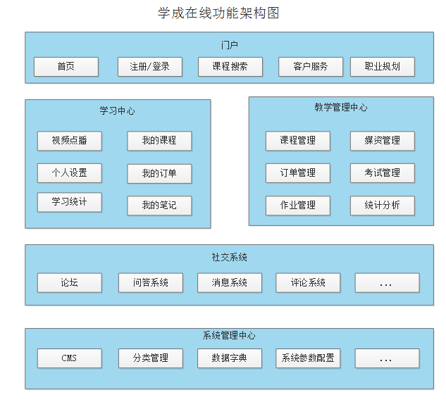
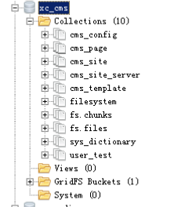

搭建环境 CMS服务端开发
1.项目的功能架构
1.1.项目背景
学成在线借鉴了MOOC（大型开放式网络课程，即MOOC（massive open online courses））的设计思想，是一
个提供IT职业课程在线学习的平台，它为即将和已经加入IT领域的技术人才提供在线学习服务，用户通过在线学
习、在线练习、在线考试等学习内容，最终掌握所学的IT技能，并能在工作中熟练应用。
1.2.功能模块

| 功能模块名称 | 功能说明 |
|---|---|
| 门户 | 在首页、活动页、专题页等页面提供课程学习入口 |
| 学习中心 | 学生登录学习中心在线学习课程 |
| 社交系统 | 社交系统为老师和学生交流搭建沟通的平台，包括：问答系统、评论系统、论坛等，学生和老师通过问答系统提问问题、回答问题，通过评论系统对老师授课进行评论。 |
| 教学管理 |
中心 | 教师登录教学管理中心进行课程管理、资源管理、考试管理等教学活动。 |
| 系统管理
中心 | 系统管理员登录系统管理中心进行分类管理、运维管理等功能。 |
1.3.项目原型
通过项目原型进一步了解项目的功能，包括：门户首页、课程搜索页、在线学习页面、个人中心等
参考“项目原型”。
2 项目的技术架构
2.1 技术架构
学成在线采用当前流行的前后端分离架构开发，由用户层、UI层、微服务层、数据层等部分组成，为PC、App、
H5等客户端用户提供服务。下图是系统的技术架构图：

业务流程举例：
1、用户可以通过pc、手机等客户端访问系统进行在线学习。
2、 系统应用CDN技术，对一些图片、CSS、视频等资源从CDN调度访问。
3、所有的请求全部经过负载均衡器。
4、对于PC、H5等客户端请求，首先请求UI层，渲染用户界面。
5、客户端UI请求服务层获取进行具体的业务操作。
6、服务层将数据持久化到数据库。
各模块说明如下：
| 序号 | 名称 | 功能描述 |
|---|---|---|
| 1 | 用户层 | 用户层描述了本系统所支持的用户类型包括：pc用户、app用户、h5用户。pc用户通过浏览器访问系统、app用户通过android、ios手机访问系统，H5用户通过h5页面访问系统。 |
| 2 | CDN | CDN全称Content Delivery Network，即内容分发网络，本系统所有静态资源全部通过CDN加速来提高访问速度。系统静态资源包括：html页面、js文件、css文件、image图片、pdf和ppt及doc教学文档、video视频等 |
| 3 | 负载均衡 | 系统的CDN层、UI层、服务层及数据层均设置了负载均衡服务，上图仅在UI层前边标注了负载均衡。 每一层的负载均衡会根据系统的需求来确定负载均衡器的类型，系统支持4层负载均衡+7层负载均衡结合的方式，4层负载均衡是指在网络传输层进行流程转发，根据IP和端口进行转发，7层负载均衡完成HTTP协议负载均衡及反向代理的功能，根据url进行请求转发。 |
| 4 | UI层 | UI层描述了系统向pc用户、app用户、h5用户提供的产品界面。根据系统功能模块特点确定了UI层包括如下产品界面类型： 1）面向pc用户的门户系统、学习中心系统、教学管理系统、系统管理中心。 2）面向h5用户的门户系统、学习中心系统。 3）面向app用户的门户系统、学习中心系统未在上图标注，在app项目中有详细说明。 |
| 5 | 微服务层 | 微服务层将系统服务分类三类：前端服务、后端服务及系统服务。 前端服务：主要为学习用户提供学习服务。 后端服务：主要为管理用户提供教学管理服务。 系统服务：公共服务，为系统的所有微服务提供公共服务功能。 服务网关：提供服务路由、负载均衡、认证授权等服务。 |
| 6 | 数据层 | 数据层描述了系统的数据存储的内容类型，持久化的业务数据使用MySQL和MongoDB保存，其中MongoDB中主要保存系统日志信息。 消息队列：存储系统服务间通信的消息，本身提供消息存取服务，与微服务层的系统服务连接。 索引库：存储课程信息的索引信息，本身提供索引维护及搜索的服务，与微服务层的系统服务连接。 缓存：作为系统的缓存服务，存储课程信息、分类信息、用户信息等，与微服务层的所有服务连接。文件存储：提供系统静态资源文件的分布式存储服务，文件存储服务器作为CDN服务器的数据来源，CDN上的静态资源将最终在文件存储服务器上保存多份。 流媒体服务：作为流媒体服务器，存储所有的流媒体文件 |
| 7 | 外部系统接口 | 1）微信、QQ、微博登录接口，本系统和微信、QQ、微博系统对接，用户输入微信、QQ、微博的账号和密码即可登录本系统。 2）微信、QQ、微博分享接口，本系统和微信、QQ、微博系统对接，可直接将本系统的课程资源信息分享到微信、QQ、微博。3）支付宝、微信、网银支付接口，本系统提供支付宝、微信、网银三种支付接口。4）短信接口，本系统与第三方平台对接短信发送接口。 5）邮件接口，本系统需要连接第三方的smpt邮件服务器对外发送电子邮件。 6）微信公众号，本系统与微信公众号平台接口，用户通过微信公众号访问H5页面。 7）点播、直播，前期视频点播与直播采用第三方服务方式，本系统与第三方点、直播服务对接，对外提供视频点播与直播服务。 8）OSS存储 ，前期静态资源文件的存储采用第三方服务方式，本系统与第三方提供的OSS存储服务对接，将系统的静态资源文件存储到第三方提供的OSS存储服务器上。 9）CDN，本系统与第三方CDN服务对接，使用CDN加速服务来提高本系统的访问速度 |
| 8 | DevOps | DevOps（英文Development和Operations的组合）是一组过程、方法与系统的统称， |
用于促进开发（应用程序/软件工程）、技术运营和质量保障（QA）部门之间的沟通、
协作与整合。本项目供了许多开发、运营、维护支撑的系统，包括： Eureka服务治理
中心：提供服务治理服务，包括：服务注册、服务获取等。 Spring Cloud Config服务
配置管理中心：提供服务配置管理服务，包括：配置文件更新、配置文件下发等。
Hystrix Dashboard服务熔断监控：监控熔断的请求响应时间、成功率等 。 Zipkin服务
追踪监控：监控服务调用链路健康情况。 Jenkins持续集成服务：提供系统持续集成服
务。 Git/GitLab代码管理服务:提供git代码管理服务。 ELK日志分析服务:提供elk日志分
析服务，包括系统运行日志分析、告警服务。 Docker容器化部署服务：将本系统所有
服务采用容器化部署方式。 Maven项目管理工具：提供管理项目所有的Java包依赖、项
目工程打包服务 |
2.2.技术栈
下图是项目技术架构的简图，通过简图了解项目所使用的技术栈。
重点了解微服务技术栈：
- 学成在线服务端基于Spring Boot构建，采用Spring Cloud微服务框架。
- 持久层：MySQL、MongoDB、Redis、ElasticSearch
- 数据访问层：使用Spring Data JPA 、Mybatis、Spring Data Mongodb等
- 业务层：Spring IOC、Aop事务控制、Spring Task任务调度、Feign、Ribbon、Spring AMQP、Spring Data Redis等。
- 控制层：Spring MVC、FastJSON、RestTemplate、Spring Security Oauth2+JWT等
- 微服务治理：Eureka、Zuul、Hystrix、Spring Cloud Config等
2.3.开发步骤
项目是基于前后端分离的架构进行开发，前后端分离架构总体上包括前端和服务端，通常是多人协作并行开发，开
发步骤如下：
1、需求分析
梳理用户的需求，分析业务流程
2、接口定义
根据需求分析定义接口
3、服务端和前端并行开发
依据接口进行服务端接口开发。
前端开发用户操作界面，并请求服务端接口完成业务处理。
4、前后端集成测试
最终前端调用服务端接口完成业务
3 CMS需求分析
3.1.什么是CMS
1、CMS是什么 ？
CMS （Content Management System）即内容管理系统，不同的项目对CMS的定位不同，比如：一个在线教育网
站，有些公司认为CMS系统是对所有的课程资源进行管理，而在早期网站刚开始盛行时很多公司的业务是网站制
作，当时对CMS的定位是创建网站，即对网站的页面、图片等静态资源进行管理。
2、CMS有哪些类型？
上边也谈到每个公司对每个项目的CMS定位不同，CMS基本上分为：针对后台数据内容的管理、针对前端页面的
管理、针对样式风格的管理等 。比如：一个给企业做网站的公司，其CMS系统主要是网站页面管理及样式风格的
管理。
3 、本项目CMS的定位是什么？
本项目作为一个大型的在线教育平台，对CMS系统的定位是对各各网站（子站点）页面的管理，主要管理由于运营
需要而经常变动的页面，从而实现根据运营需要快速进行页面开发、上线的需求
3.2.静态门户工程搭建
本项目CMS是对页面进行管理，对页面如何进行管理呢？我们首先搭建学成网的静态门户工程，根据门户的页面结
构来分析页面的管理方案。
门户，是一个网站的入口，一般网站都有一个对外的门户，学成在线门户效果图如下：
3.2.1.导入门户工程
1、安装WebStorm
参考“WebStorm安装手册.md”安装WebStorm-2018.2.3.exe
2、安装Nginx
下载nginx：http://nginx.org/en/download.html
本教程下载 nginx-1.14.0.zip(http://nginx.org/download/nginx-1.14.0.zip)
解压nginx-1.14.0.zip到自己的计算机，双击nginx.exe即可运行。
访问 ：http://localhost

3、导入门户工程
将课程资料中的门户工程拷贝到代码目录。
使用WebStorm打开门户工程目录，目录的结构如下，后期会根据开发的推进进行扩充。
3.2.2.配置虚拟主机
资料中有window下的nginx软件，解压到不是中文路径下
在nginx中配置虚拟主机：
1 | server{ |
我们将前端页面工程放在：G:/Java-webspace/xc_edu/xc-ui-pc-static-portal/
4、配置hosts文件
通过SwitchHosts修改host
进入浏览器，输入http://www.xuecheng.com
3.3.SSI服务
本节分析首页的管理方案。
1、页面内容多如何管理？
将页面拆分成一个一个的小页面，通过cms去管理这些小页面，当要更改部分页面内容时只需要更改具体某个小页
面即可。
2、页面拆出来怎么样通过web服务浏览呢？
使用web服务(例如nginx)的SSI技术，将多个子页面合并渲染输出。
3、SSI是什么？
ssi 包含类似于jsp页面中的incluce指令，ssi是在web服务端将include指定 的页面包含在网页中，渲染html网页响
应给客户端 。nginx、apache等多数web容器都支持SSI指令。
ssi指令如下：
1 | <!‐‐#include virtual="/../....html"‐‐> |

4、将首页拆分成
1 | index.html：首页主体内容 |
5、在nginx虚拟主机中开通SSI
1 | server{ |
ssi的配置参数如下： ssi on： 开启ssi支持 ssi_silent_errors on：默认为off，设置为on则在处理SSI文件出错时不
输出错误信息 ssi_types：默认为 ssi_types text/html，如果需要支持shtml（服务器执行脚本，类似于jsp）则需
要设置为ssi_types text/shtml
6、测试
去掉某个#include查看页面效果。
3.3.CMS页面管理需求
1、这些页面的管理流程是什么？
1）创建站点：
一个网站有很多子站点，比如：学成在线有主门户、学习中心、问答系统等子站点。具体的哪个页面是归属于具体
的站点，所以要管理页面，先要管理页面所属的站点。
2）创建模板：
页面如何创建呢？比如电商网站的商品详情页面，每个页面的内容布局、板式是相同的，不同的只是内容，这个页
面的布局、板式就是页面模板，模板+数据就组成一个完整的页面，最终要创建一个页面文件需要先定义此页面的
模板，最终拿到页面的数据再结合模板就拼装成一个完整的页面。
3 ）创建页面：
创建页面是指填写页面的基本信息，如：页面的名称、页面的url地址等。
4）页面预览：
页面预览是页面发布前的一项工作，页面预览使用静态化技术根据页面模板和数据生成页面内容，并通过浏览器预
览页面。页面发布前进行页面预览的目是为了保证页面发布后的正确性。
5）页面发布：
使用计算机技术将页面发送到页面所在站点的服务器，页面发布成功就可以通过浏览器来访问了。
2、本项目要实现什么样的功能？
1）页面管理
管理员在后台添加、修改、删除页面信息
2）页面预览
管理员通过页面预览功能预览页面发布后的效果。
3）页面发布
管理员通过页面发布功能将页面发布到远程门户服务器。
页面发布成功，用户即可在浏览器浏览到最新发布的页面，整个页面添加、发布的过程由于软件自动执行，无需人
工登录服务器操作。
4 CMS服务端工程搭建
4.1 导入基础工程
4.1.1.工程结构
CMS及其它服务端工程基于maven进行构建，首先需要创建如下基础工程：
parent工程：父工程，提供依赖管理。
common工程：通用工程，提供各层封装
model工程：模型工程，提供统一的模型类管理
utils工程：工具类工程，提供本项目所使用的工具类
Api工程：接口工程，统一管理本项目的服务接口。
工程结果如下：
基础工程代码及pom.xml配置参考课程资料“基础工程”。
4.1.2.导入父工程
1、将课程资料中的parent工程拷贝到代码目录
2、点击Import Model，选择parent工程目录
选择Maven，下一步。
3、导入成功
4.1.3导入其它工程
依次导入utils、model、common、api工程，方法同parent工和的导入。
4.2 MongoDB 入门
详细见window下安装MongoDB笔记
这里我们在CMS中用到MongoDB数据库
4.3.导入CMS数据库
导入cms数据库：
使用Studio 3T软件导入cms数据库
1、创建xc_cms数据库
2、导入 cms数据库
右键数据库，点击导入数据库
打开窗口，选择第一个 json。
下一步，选择要导入的数据文件（json文件）
下一步操作即可完成。
导入成功：

5 页面查询接口定义
5.1 定义模型
5.1.1 需求分析
在梳理完用户需求后就要去定义前后端的接口，接口定义后前端和后端就可以依据接口去开发功能了。
本次定义页面查询接口，本接口供前端请求查询页面列表，支持分页及自定义条件查询方式。
具体需求如下：
1、分页查询CmsPage 集合下的数据
2、根据站点Id、模板Id、页面别名查询页面信息
3、接口基于Http Get请求，响应Json数据
5.1.2 模型类介绍
接口的定义离不开数据模型，根据前边对需求的分析，整个页面管理模块的数据模型如下：
CmsSite：站点模型
CmsTemplate：页面模板
CmsPage：页面信息
页面信息如下：
1 |
|
属性说明：
1、定义一个页面需要指定页面所属站点
一个站点包括多个页面，比如：学成在线的门户站点（网站）包括了多个页面。
2、定义一个页面需要指定页面使用的模板
多个页面可以使用相同的模板，比如：商品信息模板，每个商品就是一个页面，所有商品使用同一个商品信息模板
5.2.定义接口
注意：
在CmsPageControllerApi中定义一个接口1
2
3
4
5
6
7
8
9
10
11
12
13
14
15
16
17
18
19
20
21
22
#### 5.2.1.定义请求及响应类型
1、定义请求模型QueryPageRequest，此模型作为查询条件类型
为后期扩展需求，请求类型统一继承RequestData类型。
在xc-framework-model目录下的cms下的request中创建QueryPageRequest
```java
@Data
public class QueryPageRequest {
//站点id
private String siteId;
//页面ID
private String pageId;
//页面名称
private String pageName;
//别名
private String pageAliase;
//模版id
private String templateId;
}
2、响应结果类型，分页查询统一使用QueryResponseResult
5.2.2.定义接口
在 Api接口工程专门定义接口，在Api工程单独定义接口的原因如下：
1、接口集中管理
2、Api工程的接口将作为各微服务远程调用使用。
页面查询接口定义如下：
在xc-service-api\src\main\java\com\xuecheng\api\cms目录下创建
1 | public interface CmsPageControllerApi { |
6 页面查询服务端开发
6.1 创建CMS服务工程
6.1.1 创建CMS工程结构
创建maven工程， CMS工程的名称为 xc-service-manage-cms，父工程为xc-framework-parent。
pom.xml如下：
1 |
|
2 、创建基本的包结构：
com.xuecheng.manage_cms.config：配置类目录，数据库配置、MQ配置等
com.xuecheng.manage_cms.dao：dao接口目录
com.xuecheng.manage_cms.service：service类目录
com.xuecheng.manage_cms.web.controller：controller类目录
工程如下：
3、配置文件
在classpath下配置application.yml
1 | server: |
另外从课程资料下“cms工程配置文件”中拷贝logback-spring.xml，此文件为工程的日志配置文件。
4、SpringBoot 启动类
Spring Boot 应用需要创建一个应用启动类，启动过程中会扫描Bean并注入spring 容器
注意：此类创建在本工程com.xuecheng.manage_cms包下 :
1 |
|
6.1.2 测试Controller
使用springMVC完成接口实现开发，这里暂时使用测试数据，稍后会让controller调用service来查询数据。
1 |
|
使用浏览器测试
输入：http://localhost:31001/cms/page/list/1/10 查询第1页，每页显示10条记录
6.2 Dao
6.2.1 分页查询测试
6.2.1.1 定义Dao接口
本项目使用Spring Data Mongodb完成Mongodb数据库的查询，Spring Data Mongodb提供一套快捷操作
mongodb的方法。
创建Dao，继承MongoRepository，并指定实体类型和主键类型。
在xc-service-manage-cms的dao目录下创建CmsPageRepository
1 | public interface CmsPageRepository extends MongoRepository<CmsPage,String> { |
6.2.1.2编写测试类
按住要测试的类shift+ctrl+t创建test方法
test下的包路径与main下的包路径保持一致。
测试程序使用@SpringBootTest和@RunWith(SpringRunner.class)注解，启动测试类会从main下找springBoot启
动类，加载spring容器。
测试代码如下：
1 |
|
6.2.2 基础方法测试
这里Dao接口继承了MongoRepository，在MongoRepository中定义了很多现成的方法，如save、delete等，通
过下边的代码来测试这里父类方法。
此小节内容请同学们自行测试。
1、添加
1 | //添加 |
2、删除
1 | //删除 |
3、修改
1 | //修改 |
关于Optional：
Optional是jdk1.8引入的类型，Optional是一个容器对象，它包括了我们需要的对象，使用isPresent方法判断所包
含对象是否为空，isPresent方法返回false则表示Optional包含对象为空，否则可以使用get()取出对象进行操作。
Optional的优点是：
1、提醒你非空判断。
2、将对象非空检测标准化
6.2.3 自定义Dao方法
同Spring Data JPA一样Spring Data mongodb也提供自定义方法的规则，如下：
按照findByXXX，findByXXXAndYYY、countByXXXAndYYY等规则定义方法，实现查询操作。
1 | public interface CmsPageRepository extends MongoRepository<CmsPage,String> { |
6.3 Service
定义页面查询方法，根据条件查询暂时不实现：
1 |
|
6.4 Controller
使用springMVC完成接口实现开发。
1 |
|
使用浏览器测试
输入：http://localhost:31001/cms/page/list/1/10 查询第1页，每页显示10条记录
6.6 接口开发规范
6.6.1 Api请求及响应规范
为了严格按照接口进行开发，提高效率，对请求及响应格式进行规范化。
1、get 请求时，采用key/value格式请求，SpringMVC可采用基本类型的变量接收，也可以采用对象接收。
2、Post请求时，可以提交form表单数据（application/x-www-form-urlencoded）和Json数据（Content-
Type=application/json），文件等多部件类型（multipart/form-data）三种数据格式，SpringMVC接收Json数据
使用@RequestBody注解解析请求的json数据。
4、响应结果统一信息为：是否成功、操作代码、提示信息及自定义数据。
5、响应结果统一格式为json。
6.6.2 Api定义约束
Api 定义使用SpringMVC来完成，由于此接口后期将作为微服务远程调用使用，在定义接口时有如下限制：
1、@PathVariable 统一指定参数名称，如：@PathVariable(“id”) 2、@RequestParam统一指定参数名称，如：
@RequestParam（”id”）
7 页面查询接口测试
上边的代码是基于服务端编写接口，如果前端人员等待服务端人员将接口开发完毕再去开发前端内容这样做效率是非常低下的，所以当接口定义完成，可以使用工具生成接口文档，前端人员查看接口文档即可进行前端开发，这样前端和服务人员并行开发，大大提高了生产效率。
本章节介绍两种接口开发工具，Swagger和Postman。
7.1 Swagger
7.1.1 Swagger介绍
OpenAPI规范（OpenAPI Specification 简称OAS）是Linux基金会的一个项目，试图通过定义一种用来描述API格式或API定义的语言，来规范RESTful服务开发过程，目前版本是V3.0，并且已经发布并开源在github上。
（https://github.com/OAI/OpenAPI-Specification）
Swagger是全球最大的OpenAPI规范（OAS）API开发工具框架，支持从设计和文档到测试和部署的整个API生命周期的开发。 (https://swagger.io/)
Spring Boot 可以集成Swagger，生成Swagger接口，Spring Boot是Java领域的神器，它是Spring项目下快速构建项目的框架。
7.1.2 Swagger常用注解
在Java类中添加Swagger的注解即可生成Swagger接口，常用Swagger注解如下：
@Api：修饰整个类，描述Controller的作用
@ApiOperation：描述一个类的一个方法，或者说一个接口
@ApiParam：单个参数描述
@ApiModel：用对象来接收参数
@ApiModelProperty：用对象接收参数时，描述对象的一个字段
@ApiResponse：HTTP响应其中1个描述 @ApiResponses：HTTP响应整体描述 @ApiIgnore：使用该注解忽略这个API
@ApiError ：发生错误返回的信息
@ApiImplicitParam：一个请求参数
@ApiImplicitParams：多个请求参数
@ApiImplicitParam属性：
| 属性 | 取值 | 作用 |
|---|---|---|
| paramType | 查询参数类型 | |
| path | 以地址的形式提交数据 | |
| query | 直接跟参数完成自动映射赋值 | |
| body | 以流的形式提交 仅支持POST | |
| header | 参数在request headers 里边提交 | |
| form | 以form表单的形式提交 仅支持POST | |
| dataType | 参数的数据类型 只作为标志说明，并没有实际验证 | |
| Long | ||
| String | ||
| name | 接收参数名 | |
| value | 接收参数的意义描述 | |
| required | 参数是否必填 | |
| true | 必填 | |
| false | 非必填 | |
| defaultValue | 默认值 |
7.1.3 Swagger接口定义
修改接口工程中页面查询接口，添加Swagger注解。
添加架包
1 | <dependency> |
代码如下
1 | (value="cms页面管理接口",description = "cms页面管理接口，提供页面的增、删、改、查") |
在QueryPageRequest类中使用注解 ApiModelProperty 对属性注释：
自定义错误 类中使用ApiModelProperty 注解作为提示
1 |
|
7.1.4 Swagger接口测试
Swagger接口生成工作原理：
1、系统启动，扫描到api工程中的Swagger2Configuration类
2、在此类中指定了包路径com.xuecheng，找到在此包下及子包下标记有@RestController注解的controller类
3、根据controller类中的Swagger注解生成接口文档。
启动cms服务工程，查看接口文档，请求：http://localhost:31001/swagger-ui.html
点击“分页查询页面列表”，打开接口详情
使用Swagger工具测试服务接口：
1）在cms服务接口中打断点
2）打开接口文档页面，输入请求参数，点击“Try it out”发起请求。
7.5 Postman
Postman是一款功能强大的http接口测试工具，使用postman可以完成http各种请求的功能测试。
官方地址：https://www.getpostman.com/
1、安装Postman
本教程使用，双击打开 Postman-win64-6.0.10-Setup.exe
新建一个Postman窗口
2、使用postman测试http接口
3、请求参数设置
1） get请求参数设置
2）post请求参数设置
form-data：将表单的数据转为键值对，并且可以包括文件
x-www-form-urlencoded: content-type为application/x-www-from-urlencoded，将表单的数据转为键值对
raw：请求text、json、xml、html，比如如果请求json数据则使用此格式
binary：content-type为application/octet-stream，可用于上传文件。